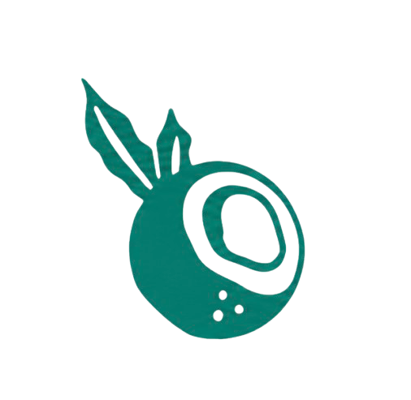
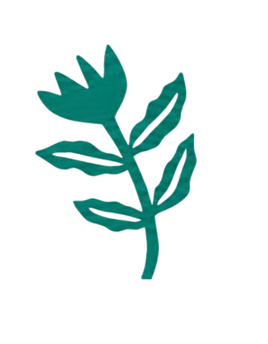
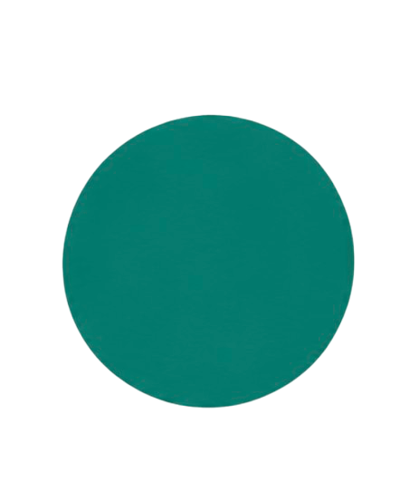
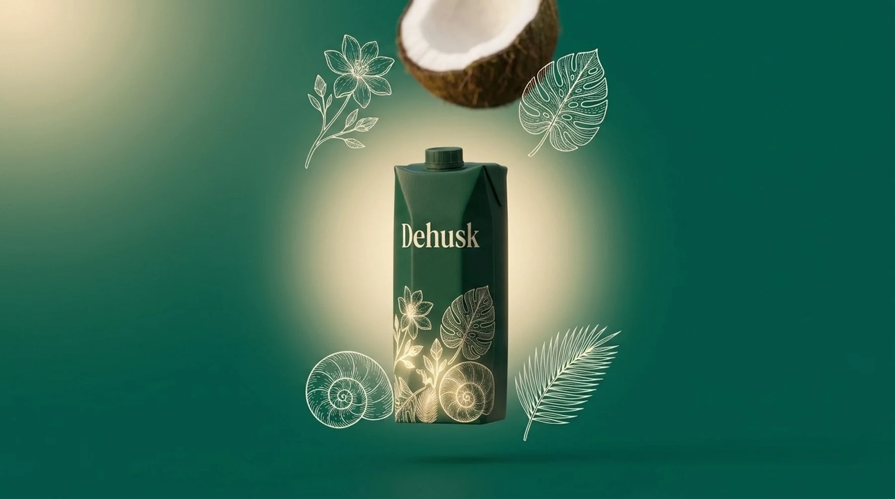

Dehusk needed to go from unbranded product concept to a live, sellable direct-to-consumer brand, in a category where every credible competitor was imported. We ran the category research, built the identity, and designed and developed the full site: three pieces of one engagement, covered below.
Brand & Digital Design
Dehusk
Market study, brand identity and a shop-ready website, built end to end for the Philippines' first locally-produced barista coconut milk.
01
Market study.
Finding the gap a coconut-milk brand could own, before designing anything.
The plant-based dairy category is crowded but narrow at the top: oat leads, almond and soy fill in behind it, and nearly every brand marketed as "barista" is built and priced around that oat base. Coconut milk, by contrast, is mostly sold as a thin, splitting, cooking-aisle product, rarely built to survive a steam wand.
In the Philippines, that barista-grade shelf was entirely imported. No brand was producing a coconut milk locally that could foam, steam and hold texture in a flat white the way dairy does, despite the country being one of the world's largest coconut producers. That's the gap: a local ingredient missing from the one format where local production should have been the obvious advantage.
The target buyer sat at the intersection of three groups already primed to say yes: home baristas frustrated by plant milks that split in coffee, lactose-avoidant drinkers who still want the indulgence of a foamed latte, and a "buy local" audience who'll pay a premium for a Philippine-first product done properly.
The category
Plant-based dairy is dominated by oat, almond and soy. Coconut milk exists mostly as a thin, cooking-grade product, rarely built to perform in coffee.
The gap
No barista-grade coconut milk was produced locally in the Philippines, a country that leads global coconut production and sits absent from its own category.
The positioning
A fortified, foamable, locally-made coconut milk for coffee, resolved into one line: "Bold Like Dairy, but Foamier."
02
Branding & identity.
A direction warm and artisanal enough to feel Philippine-grown, and premium enough to sit next to dairy.
The name itself carries the positioning: dehusking is the act of cracking the shell to get to what's inside, bold, direct, a little irreverent, exactly what "Bold Like Dairy, but Foamier" needed to sound like. The visual system had to hold two things at once: tropical warmth and artisanal texture on one side, the clean confidence of a modern DTC beverage brand on the other.
COLOR PALETTE
Vanilla Cream
#F1EBD4
Forest Green
#007D6F
Near Black
#060606
Champagne Gold
#D2BE74
Ivory White
#FDFBF7
Night Aubergine
#2E2A39
Cream carries the warmth, forest green owns every call to action, and near-black/aubergine keep the type legible without ever going flat corporate.
TYPOGRAPHY
Bold Like Dairy.
but foamier.
MARK & ICONOGRAPHY



Thin-line botanical icons (coconut, leaf, flower) plus a solid accent dot, used as connective tissue between sections instead of stock iconography.
PACKAGING & PHOTOGRAPHY DIRECTION
Straight-on packshot against a flat studio backdrop, then the same carton dropped into a natural tropical setting. The product reads as both engineered and grown.
03
Website creation.
Design, structure, implementation and features: the brand system carried through into a live, shop-ready site.
DESIGN
The hero doesn't play a video. It scrubs one. Scroll position maps directly to a frame in a 182-image sequence of the carton cracking open and pouring, so scrolling down plays it forward and scrolling up runs it back, exactly in step with how fast the visitor moves. Below it, the rest of the page alternates cream and forest-green sections, asymmetric copy blocks, and the same tropical photography direction from the brand work, so the site reads as one continuous piece with the identity, not a template it was dropped into.
Two frames from the same 182-frame hero sequence: start and end of the scroll-scrub.
STRUCTURE
Four pages carry one shared header, footer and nav: Home (hero → fortification story → brand story → flavor lineup → CTA), Shop for the direct purchase flow, Our Why for the deeper sustainability and sourcing story, and Careers for hiring. Information architecture stays flat and shop-first on purpose. Every path on the site sits at most one click from "Shop Now."
IMPLEMENTATION
-
✓
Scroll-scrubbed WebGL hero
A Three.js canvas renders the 182-frame sequence as a scroll-mapped texture instead of a <video>, giving frame-accurate, reversible scrubbing with no buffering stalls.
-
✓
Boomerang product video
The featured carton video loops with no visible cut: forward playback runs natively, and the reverse leg is a manual scrub of currentTime. No browser supports reverse video decoding natively.
-
✓
Interactive nutrient map
Hovering a nutrient label draws its connecting trail via an animated SVG stroke-dashoffset and lights up a parallax botanical background, built with plain SVG and JS and no animation library.
-
✓
Vite + vanilla JS, no framework
Each page ships its own small JS module instead of one shared bundle: light, fast and easy to hand off without a build-tool learning curve.
The boomerang carton video in action: forward playback, then a hand-scrubbed reverse, on loop.
FEATURES
A coverflow flavor carousel (Swiper, autoplaying, infinite) showcases the four ways to drink Dehusk (Ube, Strawberry, Coco Mango Matcha and Coco Latte) alongside a direct "Shop All Milks" CTA.
A fortification section breaks down the four nutrients added back into the milk (Riboflavin, Vitamin B12, Calcium, Iodine), each one a hoverable callout wired to the botanical scene below.

A direct shop flow with pack-size variants, a newsletter capture in the footer, and a dedicated Careers page complete the site: the full path from discovery to purchase to hire sits on one system.